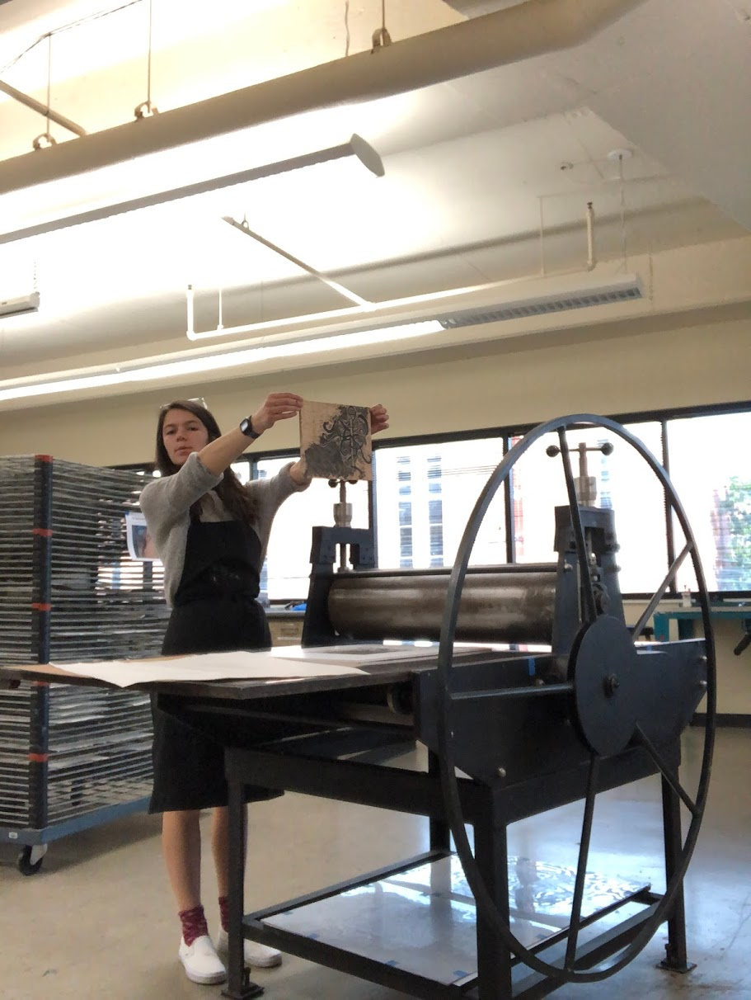

here's me and the sweet mountains of east tennessee
Designer/artist from Knoxville, TN
currently attending Belmont University in Nashville and majoring in graphic design.
At school, I am a member of the Eta Phi chapter of Kappa Alpha Theta, involved with RUF, and help with the new student orientation program.
I work on campus as a Communications Associate in the Office of Service-Learning and do plenty of babysitting jobs when I can.

and here's a good ole printmaking self-timer